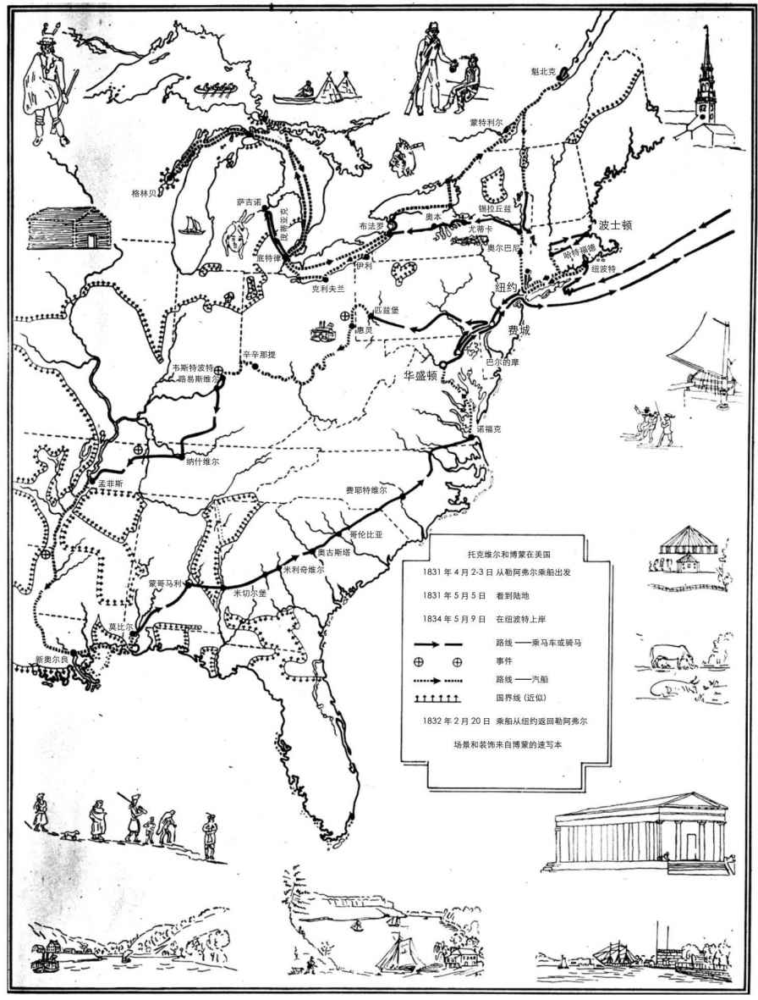

托克维尔并非靠赞美民主起家，也从未把民主捧到天上。只有在描述民主实践时，他才会给予赞扬。他在《论美国的民主》的开篇指明，民主是一个事实，是“天意使然”，如此就从民主的倡导者和反对者（因为在他的时代，仍有反对者存在）的立场中抽身出来。他说，民主在各地蔓延，并在美国取得成果。它无须倡导，也无法反对。托克维尔认为，倡导与反对双方均害多益少，尤其是倡导者，因为他们与民主时代更加和谐，因而比反对派更有诱惑力。我们首先必须分析和评价民主的优势与劣势，以肯定前者、消解后者为目的来赞美才有意义。托克维尔赞美民主，但并不认定它是好的或唯一合法的政治体制。
民主是什么？根据托克维尔的定义，它首先是身份平等，是一种生活方式；只有在谈到清教徒时，他才开始将民主描述为一种政府体制。如果民主不意味着自治，它作为一种生活方式并不那么值得赞美。我们或许会反对托克维尔的民主即身份平等的定义，因为即便到今天 ——更不要说在他的时代了 ——民主中仍然存在着明显的不平等。对此他的回应大概是，人们会变得越来越平等，民主的本质正是日益民主，就像平等本身就是唯一永续的目标，即便这是一个永远无法实现的目标。他注意到民主制与贵族制之间、个人的成败兴衰与阶级的森严等级之间的反差。在引介民主时，他称其为已经延续七百年之久的大趋势，始自教堂神职人员的地位向大众开放，而不再是贵族的特权 ——如今，这种隐秘的趋势在美国暴露于“光天化日之下”，托克维尔正是去那个国家寻找“民主本身的形象”。
然而与自由主义理论家不同，他没有阐明这一形象的逻辑，尽管他说会探索其“理论性的结论”。他致力于研究真正的民主实践的“起源”，即清教徒来到美国。清教徒自称朝圣者，因为他们来美国是代表着一种思想，而不是为了金钱或冒险；虽然这种思想基本上是关乎宗教的，但也是一种民主的政治理论，主张人民当家做主，管理整个社会，规范社会民情，建立公共教育。民主不仅表现为平等，还表现为以自治来支配民主社会或“社会现状”（social state）。这个起源就是某种形式的社会，它是民主制而非贵族制的，不是自由主义理论中的自然状态，在那种状态中只有个人，社会根本尚未存在。
民主是一种特定的社会现状，它并非十分友善。美国的一个例子就是继承法从长子继承改变为平等继承或选择继承。长子继承的初衷是为了保持贵族地产的完整并培养整个家族对祖先的自豪感，而平等继承将个体的自私从家族纽带的樊笼中释放出来，诱使人们展望未来而非缅怀过去。平等渗透到整个社会中，有时，它是一种争创卓越的激情，把卑微的人抬升到伟大的层面 ——托克维尔称之为“果敢而正当的追求”；有时，它是一种嫉妒的低级趣味，怂恿弱者把强者拉低到自己的水平。霍布斯和洛克等人认为自然状态可以产生民主，托克维尔的观点与之相反，他认为民主可以催生某种自然状态，个体之间无须彼此冲突，但也并非密不可分。
民主的个体是怎样变得强大而非弱小的？托克维尔没有说他们非此即彼。他关于独立于政治的“社会现状”的概念听上去像是社会学，一门在他的时代才刚刚开始发轫的科学。但与今日的社会学家及其他社会科学家截然相反，他并不认为社会特征决定了政治，因为如果这样想，就忽视了政治对社会的重要性，他以继承法为例所阐释的恰是这一重要性。法律是来自社会现状，还是决定了社会现状？托克维尔给出了模棱两可的答案，因为他说，社会现状既是事实或法律的产物，又是大多数社会行为的基本原因。政治自由的重要性就显得不那么稳如泰山了：如果政治只是某种社会现状的结果，无法决定重要问题，那么要政治自由还有何用？因此，虽然他说社会现状可以被认为是民主生活方式的基本原因，他还是继而谈到了人民主权——暗示由谁当家做主事关重大，同时又给人留下了这样的印象，即民主既是自治，同时也由其社会现状所决定。
托克维尔甚至得出了这样的结论：“人民统治着美国的政治世界，犹如上帝统治着宇宙。”凡事“皆出自人民，并归于人民”。但如果说美国人民像上帝，他们似乎就要取代上帝、自己当家做主了。人，而非上帝，才有至高无上的权力，这是清教徒思想中一处明显的改变，他称其为“起源”。清教徒的民主是一种神权政体，如果托克维尔心向往之的是那种思想，他就不会是个自由主义者了。政治自由为民主政治设限，防止国家对民情进行严格管制（也就是我们如今所谓“清教徒式”的管制），因为它希望民主的个体是自由的。托克维尔一贯支持政教分离的原则。但他赞同由清教徒带到美国的民主政治，因为人只有参与管理才能获得自由。他在人与上帝之间进行的这种平衡难免令人困惑，但他以此证明自由既受益于宗教，又遭到宗教的破坏。
自由的个体本身是弱小的，托克维尔必须解释他们如何变得强大，以致民主的平等最终能够强化个体的力量而不是怂恿他们相互嫉妒。结社便能使个体强大——这是托克维尔通过讨论新英格兰乡镇而探究的关键主题。在贵族制中，个体的阶层固化在他们依赖的阶层和依赖他们的阶层之间。他们勉强可算作“个体”，社团是他们被动接受的。但在民主制中，人们没有——或被剥夺了——彼此间的联系，必须自行结社。为达到这一目的，他们天然地倾向于自由结社，这种天性仅次于追求私利——这种观点与认为个体之间始终对立冲突的“自然状态”再次形成了鲜明的对比。
乡镇既自然又脆弱。它“如此自然，以至于只要有人聚集，就会自然而然地形成乡镇”，然而在文明国家中，乡镇只见于美国。原因是乡镇政府就像一个自由的“小学校”，既幼稚又笨拙，上级主管部门总是蠢蠢欲动想干涉纠正。只有美国拥有智慧，或者如智慧的托克维尔所说，只有美国走运，能让乡镇保持原样。托克维尔称之为一种政府体制，因为它井然有序，广开视听；这种政体既非不可告人，也非暗箱操作，而是光明正大的。乡镇当然得到了各州政府的授权（托克维尔接下来就要谈到州政府了），但他在分析民主之始，先将其视为一种自下而上的政府体制，底层的民主最是自发的。
人民主权的教条称每一个个体的“文化修养、道德境界和个人能力”都与其他人相当。然而个体想要完成任何超出其个人力量所及之事，就必须和他人结社；并且如果要结社，就必须服从于社团的负责人。托克维尔使用了英语的“市政委员”
（selectmen）一词指代那些管理乡镇的人；如果用法语，他也许会称呼他们“精英”（elite）。既然每一个个体都被宣称在能力上与其他任何人相当，那他为何还要服从？个体并不是因为身处下级而服从，而是因为有用才服从的。个体为了完成某件个人力所不及的事而屈尊，比如修路。并且他最终依然享有尊严：一种在达成目标的同时还伴随着社交之乐的尊严。像在小学里一样，他了解到自己完全可以在服从的同时仍然享有自由。在《论美国的民主》的绪论中，托克维尔说欧洲的民主已经“陷入自身的盲目本能中”；而在美国的乡镇，民主享有欧洲所没有的合法性，日益发展壮大。
美国在乡镇中自学了如何生活在自由之中，托克维尔也用自己的分析让我们了解到美国正在进行的实践。他承认，在美国乡镇政府并非随处可见，他也无疑夸大了它的优点，力图用赞美的语言大力推广这些优点。如果人民主权像法国一样是自上而下，而非自下而上的，就会强加于人而令人浑然不觉。乡镇政府有很多民选公职，满足了很多人小小的野心，也让公民对自己的政府有了归属感。它让民众逐渐习惯于这种政府体制，“若没有这种体制，自由就只能依靠革命实现”。民主通过选举而茁壮成长，并且托克维尔还说，美国并非因为繁荣而有了选举，而是因为选举才走向繁荣。
美国人学习自治的另一种形式是陪审团，“它是一所总是敞开大门的免费学校，每一位陪审员都在这里学习运用自己的权利”。在英国，由贵族成员组成的陪审团是一个贵族机构，但它在美国却实现了民主化。美国的陪审团教育公民如何裁决，即如何执行民主立法机构渴望通过的一般法律，特别是在某些需要对公平做出调整的情况下。它教育“每个人都要敢于为自己的行为负责” ——他说这是一个有男子汉气魄的政治美德。托克维尔赋予陪审团以巨大的力量。它是“让人民实施统治的最有力的手段” ——也许托克维尔这是有意夸张，为的是配合其假借赞扬而提出建议或敦促的策略。让人民实施统治“也是教会他们如何统治的最有效的手段”。在美国，自由的人民边干边学，而不是在行动之前先去请教某种理论。
总之，裁决节制了人民主权，向他们表明了其主权的局限性，主权必须通过法律来表达，并且就算是好的法律，在执行时也可能过于严苛。与此同时，美国诸州的法官选举表明，在选举中，人民通常拥有免职的专断权力，这类权力有时既没有充分的理由，也无法补救。无论人民主权如何受到控制和削弱，它仍有非理性的一面。人民主权最终或许未必比君王主权更加理性；二者都会心血来潮、反复无常。自由无法全然合理，自由公民看到自己的党派和候选人失败时，必须学会平静地接受人民的决定。
鉴于乡镇和陪审团的政治优势，托克维尔就政府集权问题做出了区分，他的观点至今仍被广泛引用。如果政府能综合各方的共同利益，政府集权没有什么不好，但服务型政府的行政集权会削弱服从政府的人民的力量，因为要求统一会摧毁人民的“市镇精神”，即自治实践与抵御外敌相结合，这种市镇精神体现在本地人建立乡镇和陪审团的自由中。他承认行政集权可能更高效，但它会变本加厉、日益臃肿，越来越有攻击性；在从人民手中拿走行政权时，无视其所造成的伤害；拒绝人民的自由合作，把权力保留给在中心指挥一切的官僚。法国就是这种错误的典型，因为像枢机主教黎塞留和马扎然这类大臣主导的君主制政府树立了一个坏榜样，随即被法国大革命效仿。而美国的联邦制度让地方行政得以保持，并仿效英国行政分权的好榜样 ——英国是由贵族制转变成当前制度并民主化的另一个实例。
美国联邦制度的体系是依照宪法建立的联合体，托克维尔的目光从乡镇和单个州转向了这个联合体；他把乡镇描述为自然和自发的形式，州在他的笔下也是自然的，像父权一样自然，而联邦则被他比喻为“艺术品”。他对1787—1789年制宪建国高唱颂歌，称赞美国人是“伟大的民族，当立法者提醒他们”存在危机时，仍然能够用两年的时间反躬自省，深入探查故障，从容不迫地找到了解救之法，并“不流一滴泪、不流一滴血”地服从它。这样的成就是“社会历史上的一件新事”。遵照人民主权的原则，托克维尔首先将功劳归于美国人民，随后又赞美了带头前进的美国建国者和联邦党人。他称他们是“新大陆史上最聪明、最高尚的人物”。他似乎是在暗示，主权的最佳体现有时并非魄力，而是耐心，以及对高尚德行的尊重。
托克维尔称其为“社团”的组织，也就是如今的社会学家所谓的“群体”。“社团”这个词暗含的意味是，社会是由个体与他人结合（法语动词为反身动词）所产生的。结社是人类的天性，其天然性仅次于个体的自主行动。但在民主制度中，所有的人都是平等的，因而彼此独立；这样一来，对平等的追求往往会让公民变成独立的个体。社团必须努力才能结成，而非理所当然。托克维尔把两人以上的几乎所有群体都叫作社团：从婚姻（“配偶社团”）、私人俱乐部、联营商号到政党、乡镇、国家乃至整个人类。这就是托克维尔的自由主义的另一个与众不同之处。更典型的自由主义者约翰·斯图尔特·密尔竭尽所能地捍卫不屈从于多数意见的个性的价值，而托克维尔却不惜笔墨地讨论起结社对自由社会的益处。他不像密尔那样坚信个体可以学会与大多数抗衡，也希望能够说服大多数人了解，他们没必要刻意追求统一。
他考察的第一种社团便是政治社团，在《论美国的民主》下卷中，他又对政治和公民社团加以区分。两者均是他称之为“公民社会”的非正式联盟，如今这个词被广泛使用，指代国家与个体之间的领域。但托克维尔也用它来指代乡镇和其他政府体制。结社具有——或者往往具有——政治性，是一种政治自由行为。托克维尔说，公民社团是一种代表共同利益的团体，而政治社团是利害相异者组成的团体；但他似乎并没有立定心意恪守这一区分，因为他所举的最主要的例子，19世纪美国的节制会 [1] ，一会儿被他叫作公民社团，一会儿又被叫作政治社团。在当今的美国，诸如全国步枪协会或美国退休人士协会这类社团都是由代表共同利益的人组成的，但显然也颇具政治性。
政治和公民社团之间区别不大的原因在于，美国人是在政治结社中学习如何结社的。托克维尔说人民可以自我教育，第一次是在讨论乡镇和陪审团时，第二次就是在笼统地讨论社团时：社团应该被视为“免费的大学校，所有公民都可以到这所大学校里来学习结社的一般理论”。那么这里的“一般理论”是指什么？托克维尔没有给出定义，不过他的确提到了结社艺术和结社科学，那大概是人类行为和认识相结合的产物，在这种结合方式下，理论最终源自结社实践。
这是人民可以学习的理论。结社是一种免费教育，因为它相对容易，不会让民主公民产生非理性的期望，他们毕竟只是凡俗之人。美国人希望把自己摆在第一位，且不认为人应该无私。托克维尔有一个著名的表述来总结美国人（或英裔美国人）的教条：“不言而喻的私利”——意指人必须首先考虑自我利益。托克维尔没有说这是他本人的教条，而是说美国人赞成此说。
在提到美国人对私利的依赖时，托克维尔的观点与现今关于民主参与的讨论不同，后者有时被称为“公有社会论”。公有社会论反对私利；它崇尚利他无私，追求与自私或市场取向完全相反的公共利益。在托克维尔看来，代表着群体的意见来自个人的私利且有利于私利，而不是无私的、与私利相抵触的。如今还有另一种说法，认为社会只有一种，那就是民主的社会，即平等公民建立起来的社会，类似于“民主参与”这个短语的意涵；但公有社会论认为贵族的社会也是存在的，其中的个体存在于一个等级框架中。而民主社会，正如我们在乡镇中看到的，尽管建立在平等个体的基础之上，却也利用了不平等的个体的才能和野心。
当然，这在很大程度上取决于以上表述中“不言而喻”（bien entendu）的部分包含些什么。这一短语有时被译作“正确理解”，说得好像与个体不直接相关的利益也能被正确地理解为私利似的。要么就是我们最好认为“不言而喻”的私利需要与看似无关个人利益的事物——如荣誉和美德——相伴相随？
问题源自关于民主制度中“形式的必要性”的讨论，这是贯穿全书的一个主题。托克维尔在书末总结中指出，民主主义者“不容易理解形式的功用；对形式抱有一种本能的蔑视”。形式和规程是对他人表示尊重，以及与非亲非友之人共同行动所需的制度（包括规则和官员）、民情（典礼、仪式、礼节和“盛装打扮”）或法律义务（如正当的法律程序）。对民主主义者而言，这些往往仅属技术问题，是延迟或阻碍其迅速实现欲望的不便。在民主制度中，它们显得过于繁琐而非理性，“拘于礼节”就表示一个人想要自己看起来不同于其本来面目。但在托克维尔看来，这恰恰是它们的优点。
形式在人与人之间设置了屏障，就像公职部门在政府与人民之间制造了不平等一样。当程序要求特定的仪式或教养时，这些机构就在人和他们的欲望之间设置了障碍。在推动政府通过法律而不是颁布命令或冲动行事时，它们要求政府遵照正当的法律程序。要求对隐私或尊严予以尊重时，它们会让人们彼此保持距离。民主的人民蔑视形式，是因为他们希望径直到达其欲望的目标，偏爱行动而非尊严，偏爱真诚而非礼貌，偏爱结果而非正确性；总之，他们认为实质重于形式。这样的人民因为具有平等的特性自然会缺乏耐心，平等让他们不必再“循规蹈矩”或取悦那些比自己位高权重的人。私利的本义符合这一性情，因为按照今天的实用主义说法，它要求唯利是图，而无须践律蹈礼。但事实上，正是不太注重形式的民主的人民才更需要形式。托克维尔说，形式的主要优点是在强者和弱者之间，特别是在政府与被统治者之间设立一道屏障，迫使前者减速，让后者有时间做出反应。托克维尔的观点与他笔下的美国人相反，他认为不言而喻的私利就是生活在这样一个社会里：个体因受阻而无法直接攫取私利，而被迫以遵规守法的、依照传统的、尊重他人的或符合程序的手段来达到其目的。
因此，私利既因社团的实用性而向其提供支持，也会在其变成麻烦时破坏它们。结社便利的另一面，就是人们很容易忽视或解散它们。所以托克维尔强调，在美国，政治活动的喧嚣与骚动“此起彼伏”，他说如果不是实地亲眼所见，则根本无法理解这一点。结社行为特别是指为了某种新思想或道德目的而结社，在美国，自由的习惯根深蒂固，更甚于对自由的热爱。民主较之专制的真正优势，存在于社团动荡不息的行动和活力之中。
“不言而喻”的私利的另一方面则是美国人的民主民情（moeurs）。托克维尔认为，在经济活动中算计一己私利是理所当然的，但他认为还需要考虑维持社会运转的实践经验、习惯和见解，也就是民情。他说，他对民情极其重视，如果读者未能感受到这一点，就是没有抓住他在撰写此书时向自己提出的“首要目标”。托克维尔那两位18世纪的导师，孟德斯鸠和卢梭，都曾在自己的政治哲学中强调民情，而民情也在19世纪社会学的兴起中发挥了作用。古典政治哲学家会提到广义的法律（nomos），包括成文和不成文的法律，但托克维尔认可自由主义对于此两者的区别。在霍布斯和洛克的自由主义理论中，这一区别的目的在于提升由某个最高主权者制定的、源自人民之许可的法律的地位，使之高于可能会妨碍主权者决定的民俗。但本着政治自由之宗旨，托克维尔希望在民主国家那些主权者的决定能够被大面积分散而不是过分妨碍。托克维尔与最初的自由主义理论还有一个分歧就是，他认为民情高于法律，因为民情维系着法律。法律有时会改变民情，比如新的继承法促进了美国家庭的民主化，但民情，“心灵的习惯”以及头脑的习惯，构成了“一个民族完整的道德和精神面貌”。
因此，民情包括宗教。在美国人“不言而喻的私利”的信条中，宗教是不是一个因素？答案是肯定的，但个中关系错综复杂。在《论美国的民主》上、下两卷中，托克维尔都谈到了宗教信仰，但态度多少有些不同。在上卷中，作为民情之根源的宗教有助于维护美国这个民主共和国。托克维尔在这里考察宗教是因为这个功能，而非其真确性 ——他还说最要紧的不是全体公民信仰真正的宗教，而是他们信仰宗教。根据这种政治观点，宗教为政治服务，而不是像清教徒那样让政治为宗教服务。宗教迫使人尊重那些不可逾越的障碍，接受遏制人类欲望的“某些事先规定的重要原则”，“使人世与天堂融洽和谐”。宗教为人类的主权设限，因而也就为民主制度中的人民主权设限。宗教大多通过女人而非男人设限，因为民主制度下男人的致富欲望很少受限，但女人创造了民情，宗教“像君主一般统治了女人的灵魂”。

图5 1831—1832年，托克维尔和博蒙的美国之旅。他们开始这次为时9个月的旅行时，托克维尔只有25岁
如此一来，托克维尔认为民情之于政治有多重要，于女人也同样有多重要。矛盾的是，他在下卷中关于女人的讨论认为，女人施加影响的条件是她们自己置身于政治之外。同样的条件也适用于神职人员。托克维尔坚决支持政教分离，主要原因是如果宗教干预俗世的政治，它就无暇关注彼世了。为确保其势力，宗教必须保持纯洁——而且远离政治时，它反而会拥有最大的政治力量——因为这样能够培养抑制政治的力量。女人和神职人员都是通过不直接行使权力而间接拥有权力的。宗教和家庭合在一起，构成了政治不可或缺的非政治补充，提醒人们除了政治生活之外，还有更高尚也更关乎个人的生活，从而对政治予以约束。然而，宗教和家庭两者都是自治所必需的，因而在某种意义上也具有政治性。
托马斯·杰斐逊平生最后一封信（写于1826年6月4日）写到了他执笔的《独立宣言》，在信中，他毫不犹豫地抨击了“僧侣的无知和迷信”，称之为启蒙运动的敌人。在托克维尔看来，专制的运作无须宗教信仰，但自由做不到这一点。虽然美国人不允许宗教直接混入政府，他说，仍然应将宗教视为“他们首要的政治体制”，与其说它让美国人偏爱自由，倒不如说方便他们享用了自由。他们在头脑中“完全混淆了基督教信仰和自由” ——得出这个结论让托克维尔避开了对美国基督徒的虔诚程度做出评判。美国人认为宗教是有用的，但似乎只有在他们因其正确而信仰之，而非作为一种政治体制存在时，它才是有用的。宗教不会像私利那样让众人“心照不宣”，毕竟美国人不是为证明虔诚信仰是善行而以旁观者的视角去审视宗教，那就不虔诚了。
在这一语境中，托克维尔没有提及杰斐逊，而对那些谴责美国人的法国人展开了抨击，后者谴责美国人像无神论哲学家斯宾诺莎一样，不相信永恒世界。在《论美国的民主》的绪论中，他将那些把宗教和自由严重对立起来的团体归为欧洲的“精神泥沼”，显然，宗教和自由的结合便是托克维尔新政治学的首要原则，也是其新的自由主义的显著特点。
清教徒从英国带来的宗教是民主和拥护共和的，但宗教从总体而言仍是“贵族时代留下的最珍贵的遗产”。托克维尔逐一提醒我们注意，美国的民主有很多贵族特质。虽然无一遗漏，但他从未把它们累积相加 ——也许是因为累积的总和会令其贵族特质过于明显。在托克维尔看来，贵族制和民主制是历史上相继出现的两个时代，而且贵族制作为一种原则，总的来说已经谢幕，永远消失了。但如果说贵族制已然退出了历史舞台，它就不再对民主构成威胁。托克维尔可以帮助我们了解其优点和魅力，无须担心这样做会给人留下为其辩护的印象。他从不曾试图将贵族制和民主制混合起来，并公开声称混合政体纯粹是“不切实际的幻想”，因为在每个社会，我们最终都能发现“一个占据主导地位的行动理念”。托克维尔反对混合政体的立场表明，他抛弃了古典政治学的主要策略，也对自由主义的多元论提出了质疑。但他仍然认为，只要民主制度原则没有受到挑战，就可以在其中夹杂一些残留的贵族特征。
民主制和贵族制是两个独立的整体，是两种不同的生活方式，各自都必须保持自身的纯粹性，因而构成了“两个截然不同的个体”——托克维尔在《论美国的民主》结尾如此声称。但他希望在不伤及人民主权的民主原则的前提下，调和民主个体的绝对和盲目偏袒的特质。至于哪些民主社会的民情和制度据称源自贵族制或具有后者的特征，他留给读者自己去总结。除宗教外，他还提到陪审团，它也曾经是一项贵族制度，那时的裁决者是贵族同僚，但它如今已经民主化了。美国对于本地自治、言论自由和出版自由的热爱都来自贵族制的英国。民主社团是人为创造出来替代“贵族人士”的影响力的，热衷于秩序和法律程序的律师在民主的美国当算是保守的贵族制度。托克维尔反复提出“次级权力”（secondary powers）可以作为民主集权的解决之道，这也是贵族制的天然产物，他赞美的民主形式也是如此：虽然美国宪法是由联邦党制定的，事实上它却是受到了“贵族热情”的启发。
如此一一列举，最引人注目的当属托克维尔将权利的来源也归功于英国的土地贵族制度。他说，从英国带来的关于权利的思想并非源自约翰·洛克（他的名字并未出现在此书中）的政治哲学，而是源自反对国王的英国贵族成员们的实践，他们力图保护个人的权利和本地的自由。在美国，“自由已经陈旧，平等相对新潮”。因此，他在谈及自由的实践、民情和制度时，并未引入权利作为实践的基础，没有像《独立宣言》那样声言人类“由造物主赋予的”若干权利先于政府而存在，而是提出权利就是自治实践本身。
在行使权利时，必须具备“一种政治精神，使每个公民觉得自己也享有曾对贵族制国家的贵族起过鼓舞作用的某些权益”。这种精神会让人想起柏拉图和亚里士多德所描述的血性（thumos），他们把它形容为像动物捍卫自身利益时的冲冠一怒。它全然不同于由政府保证的经济和社会权利，我们如今称后者为“法定权利”（entitlements），旨在向个人提供保障。在托克维尔看来，权利来自道德，来自“引入政治世界的道德”。这种道德会促使人们甘冒风险去保卫自由——就像《独立宣言》的签署者们曾以“神圣的名誉”共同宣誓——或者在日常行为中，宁愿抛弃政治冷漠的舒适和安心，加入社团或竞逐公职。
托克维尔笔下的“贵族制”（aristocracy）一词是指与民主制截然不同的一种生存方式，而不是这个词的字面意思，即“最优者治世”。他指的是贵族家族的封地贵族制。但美国的贵族制特征来自英国，因此，每当他希望提醒人们注意英国贵族制和美国民主制 ——在某些方面 ——具有连续性时，他不仅会说到美国人，还频繁地提到“英裔美国人”。我们还可以进一步说，托克维尔的自由主义在描述自由社会时，依赖的是国家和社会状态，而不是社会契约。在详述英裔美国人时，他相当尖锐地指出，他绝对不会接受人只靠认可相同的领袖和服从相同的法律就能够形成社会的观念，也就是社会契约的观念。相反，他详细讨论了清教徒以上帝的名义 ——而不是自由主义理论所称的为了个人自保 ——接受的实际契约。美国的民族特性部分源自英国人，这一事实为它打上了特殊的印记；如果它源自另一个民族则全然不同，且这种不同不仅仅体现在今人所谓的民族特性上。美国的政治和宗教，乃至哲学和道德，例如不言而喻的私利这一概念，全都是从英国传播到美国，成了双重国别的英裔美国人的独特特点。
让英裔美国人尤为与众不同的是自豪感，美国人尤其充满自豪感，他们“自视甚高”。就连他们的宗教热情也“在爱国主义的温床上不断升温”，他们还把牧师送往边境，为的是改善国家，也是为拯救灵魂。美国的爱国主义与英国的截然不同，因为前者是受到民主制启迪而非由故土引发的，且源于自治的实践。美国的爱国主义是被创造出来而不是继承的，是理性、思辨和文明的，而不是本能的情绪。因为如果像美国公民那样积极参与政府事务，他们理当以此居功。他们发现自身利益与共同繁荣密切相关，当他们为这两个目标而奋斗时，自豪感就与致富的渴望合而为一了。托克维尔认可我们如今所谓劳有所获的“美国梦”，但强调了它的政治基础。美国的爱国主义很“毛躁”，像托克维尔这样的外国访客会觉得它相当讨厌，因为国家荣誉会加重每个人的虚荣心并为它提供借口，以至于个人只能赞扬而不能批评国家。这是拥有民主自由的结果之一，但显然也借鉴了英国的贵族制。
自豪感是托克维尔的新式自由主义的重要特征。“我宁愿让出我们几个小小的美德，来换得这个恶习。”这是在反对那些对自豪感不满的“道德家们”，也同样反对霍布斯的形式自由主义，霍布斯希望自豪感或浮夸心可以受到政府的压制，而洛克则将其简化为一种无保障或不安定的感觉。这两位思想家都将自保的权利放在首位，声称担心个人的生命安全，而非对自身的美德充满自豪，才是人类最强烈的天然欲望。在他们看来 ——这也是自由主义者的普遍观点 ——自豪感是自由的敌人，因为它会引发征服他人的欲望；而且它与私利相对立，因为一个自大的人很容易变得暴躁易怒，放弃思考而鲁莽向前。托克维尔不以为然，但讽刺的是，他也承认自大是一个缺点，并认为它也应算作明显与私利相冲突，却包含在不言而喻的私利中的诸多事物之一。
托克维尔认为，征服的欲望并非民主制度最害怕的情感，且算计个人利益对自由更加有害而非有利。在自大这个问题上，他表达了在美国的民主制度中，他惧怕的是什么，颂扬的又是什么。他颂扬美国民主制度的自治实践和自由的人们因为所取得的成就而骄傲，证明他们在这一点上超越了自然界其他一切只会服从、无法自治的生物。但他同时指出，民主制本身就会抵消自大并往往会压制它，富人竞选时就会出现这样的例子。民主道德家们和自由主义理论力图达到的这个目的，已经在很大程度上由民主社会自行完成了，他们的建议实在没什么用处。民主制度使自大者变得谦卑，同时也创造了自己的骄傲，这和贵族制度中贵族阶层的骄傲一样，是它本身所必需的。
鉴于自豪感对自由如此重要，托克维尔再次谈到了灵魂。自豪感意味着个人意识到了自我，因而超越了自我 ——这是“灵魂”的基本含义。灵魂可以反观自身，自我赞许便引发自豪，自我批评便导致羞愧。这样一个灵魂引出或再次引出了他关于人性的复杂观念。他频繁地提到“灵魂”一词。他的新式自由主义便是有灵魂的自由主义，同时又受到关于灵魂的旧观念的影响，自由主义曾试图以自我来取代后者。自由主义的“自我”对获益很感兴趣，却没有因为灵魂在超越的层面对自我进行反省而变得复杂。自由主义的自我没有能力自豪或羞愧，也不太可能获得满足；它只是不停地索求。托克维尔不仅回归到有序的灵魂这一古典哲学概念，还援引了古典哲学和基督教关于高尚的灵魂的概念。
因此，托克维尔在《论美国的民主》绪论中所表达的主要忧虑就是，他在欧洲看到的民主制导致了灵魂的堕落。他说，贵族制是基于这样一种信念，即贵族成员的特权是大自然永恒不变的秩序，这当然是个假象，但不得不服从的人民却认为它是正当的。而民主制度还没有建立合法机构来取代已经被推翻的贵族特权，因而人民虽然不再是“农奴”，却出于恐惧而不是爱和尊重，对现有的政权垂首帖耳。出于恐惧的服从完全是权宜之策，难免使灵魂堕落，因为人民会为自己懦弱卑微地服从权威而感到羞耻，哪怕他们服从的是民主的权威；这样的人民无法自重，也不认为自己是自由的。
之所以出现这种令人沮丧的状况，与其说是道德失范，倒不如说是欧洲当前的某些“精神泥沼”导致的。在美国实践中的民主制也不乏同样的失误，那里的公民颇感自豪，他们相信政府是合法的，人民的服从也是合理的。